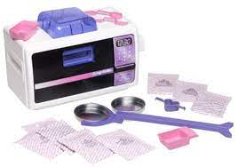

The Infamous Easy Bake Oven! Let me first say, Saturday morning commercials were life in the 90's!!!
We woke up looking forward to watching cartoons and commercials on Saturday mornings. This is one of Hasbro’s top-selling items of today.
EASY-BAKE ovens continue to be cherished favorites for bakers-in-the-making. This amazing toy is still being manufactured as of today and is still a top-wanted item in the toy section.

The Easy-Bake Oven was originally introduced in 1963 by Kenner Products, a toy company based on Cincinnati, OH.
A decade after the Easy-Bake Oven and Snack Center was introduced, the Real Meal Oven was released.
This oven was different from the others in being able to cook larger portions, and two of them at once, using two pans at the same time.